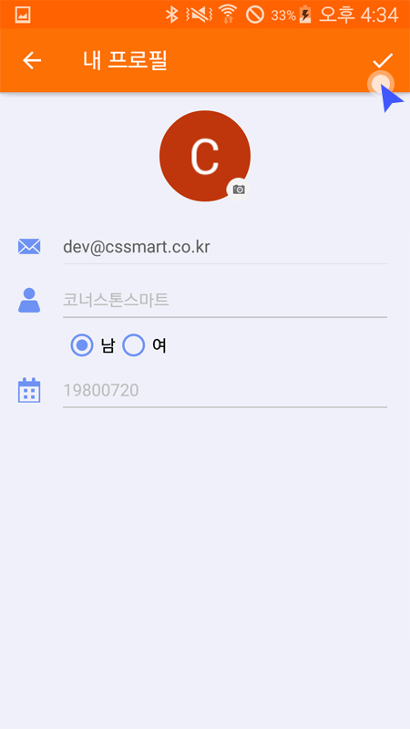
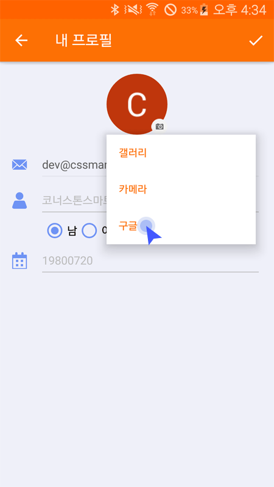
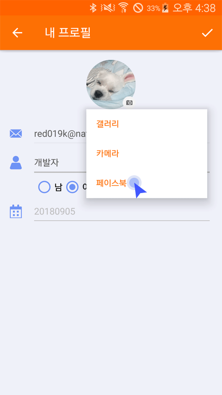
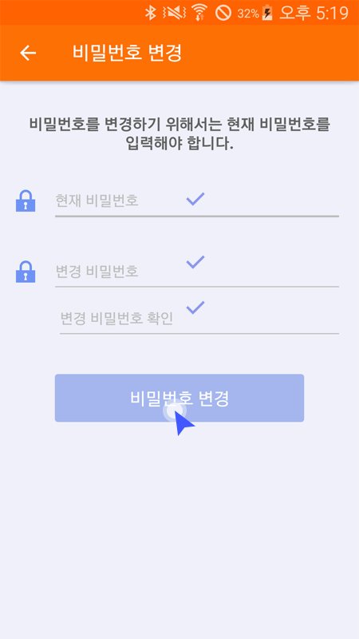

메뉴 > 설정 > 내 프로필로 이동합니다.
수정하려는 항목을 입력하고 ‘완료'버튼으로 수정을 완료합니다.
* 이메일은 변경할 수 없습니다.
구글계정으로 로그인한 사용자는 구글계정에 설정한 프로필 사진과 연동할수 있습니다.
페이스북 계정으로 로그인한 사용자는 페이스북 프로필 사진과 연동할수 있습니다.
‘내 프로필'화면에서 ‘비밀번호 변경을 클릭합니다.
현재 비밀번호와 변경하려는 비밀번호를 입력하고 ‘비밀번호 변경'버튼을 클릭하면 비밀번호가 변경됩니다.
‘로그아웃' 항목을 클릭하면 앱에서 로그아웃 됩니다.
* 모든 기기는 연결이 해제됩니다.
* 라이딩이 중지되며 트래킹 정보가 유실될 수 있습니다.